Incastro Turni – Guida per il responsabile
Come preparare il turno del mese: dalla raccolta dei desiderata al PDF da far firmare.
- Il turno del mese in sei passaggi
- Correggere il turno e rigenerarlo (cambi a mano, richieste del direttore, cambi dopo la pubblicazione)
- I desiderata in dettaglio
- Regole del mese e ambulatori (aggiungere, sospendere, cambiare)
- Leggere il risultato (controlli, equità, turno impossibile)
- PDF e invio ai medici
- Medici e attività (arrivi, partenze, nuove sigle)
- Le pagine dell'applicazione in breve
- Domande frequenti
Nelle immagini i nomi dei medici sono di fantasia: la guida simula la preparazione del turno di novembre 2026. I riquadri arancioni numerati indicano dove cliccare.
Parte 1 · Per iniziareIl turno del mese in sei passaggi
L'idea è semplice: tu inserisci i desiderata, l'applicazione propone il turno rispettando le regole del reparto, tu lo controlli e lo pubblichi. Le regole (notti, smonti, weekend, reparto, ambulatori, equità…) sono già caricate: non devi reinserirle ogni mese.
- Apri il mese dalla pagina Mesi.
- Inserisci i desiderata: importa il foglio Excel di raccolta oppure scrivili nella griglia.
- Dai un'occhiata alle regole del mese: di solito non c'è nulla da cambiare.
- Genera il turno: un clic e circa 30 secondi di attesa.
- Controlla il risultato: se le violazioni rigide sono 0, il turno rispetta tutte le regole.
- Pubblica, scarica il PDF e invia il turno ai medici.
Apri il mese
Nella pagina Mesi scegli il mese (1) e premi Apri / crea mese (2). Se il mese esiste già, puoi anche cliccare direttamente sulla sua scheda nell'elenco.
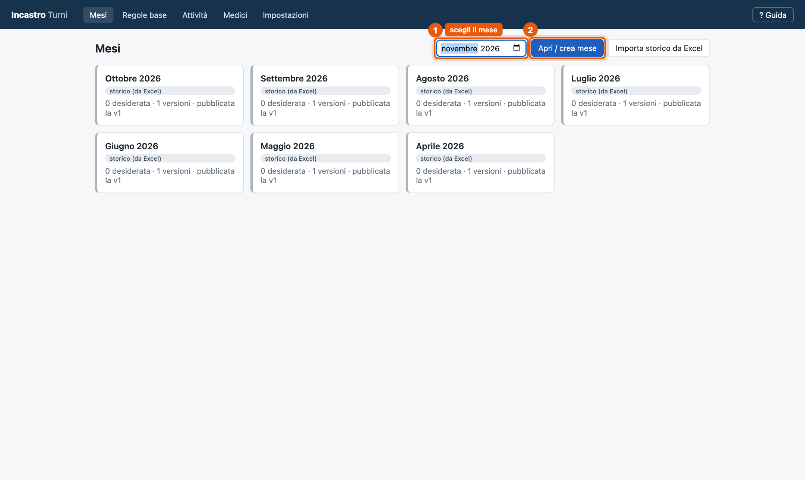
Il mese si apre sulla prima delle cinque schede in alto, 1 · Desiderata: le schede seguono l'ordine del lavoro.
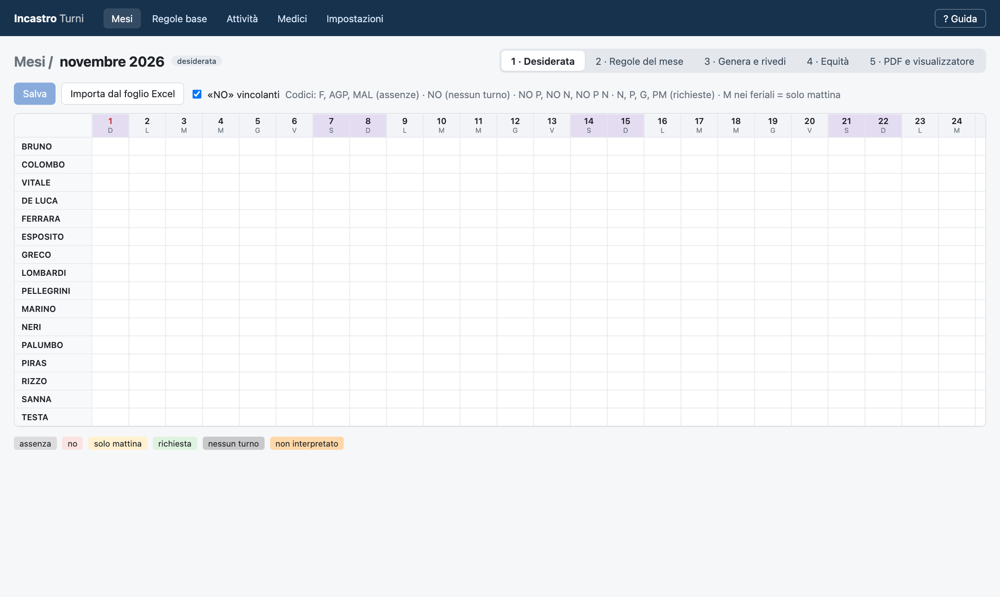
Inserisci i desiderata
Il modo più rapido è importare il foglio Excel in cui hai raccolto le richieste, quello di sempre. Premi Importa dal foglio Excel, scegli il file (1), controlla che sia selezionato il foglio del mese (2) e premi Importa (3).
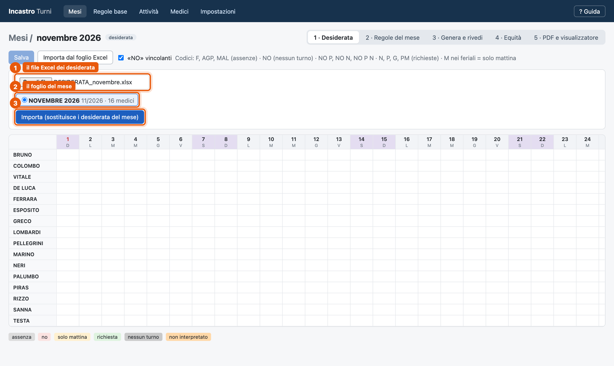
Dopo l'import ogni cella è colorata secondo come è stata capita: grigio per le assenze (F, AGP, Mal), rosa per i «NO» (es. NO P N = niente pomeriggio né notte), verde per le richieste (es. N = vorrei la notte), giallo per «solo mattina». Un colore arancione indica un testo non capito: correggilo.
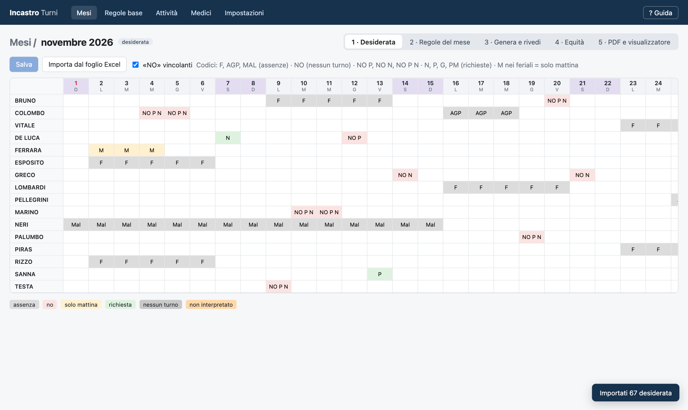
Per aggiungere o correggere una richiesta arrivata dopo, scrivi direttamente nella cella (1) e premi Salva (2). Per cancellarla, svuota la cella e salva.
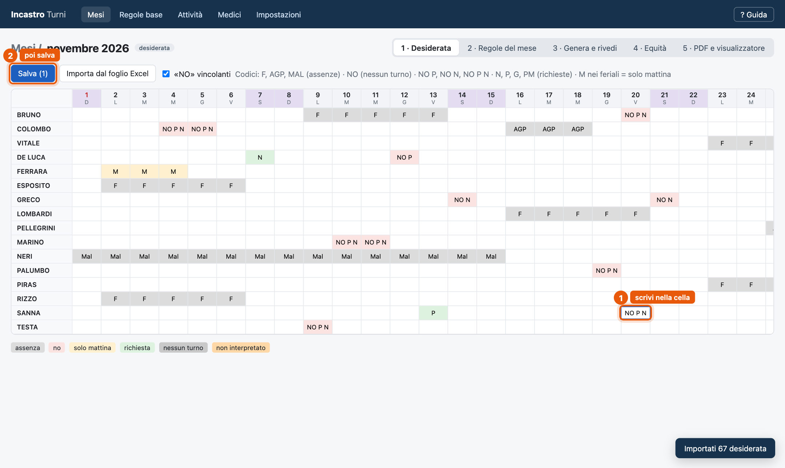
Dai un'occhiata alle regole del mese
Apri la scheda 2 · Regole del mese. In alto il riquadro Ambulatori e attività elenca cosa è programmato nel mese. Se non ci sono novità (ambulatori sospesi, nuovi, spostati) non devi fare nulla: valgono le regole di sempre. Come si cambiano è spiegato nella Parte 4.
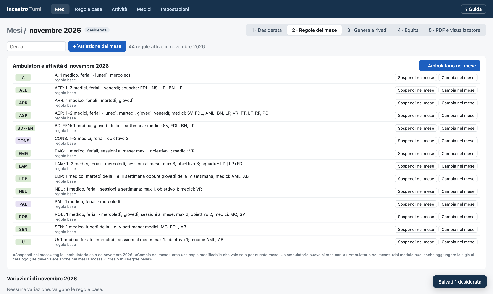
Genera il turno
Apri la scheda 3 · Genera e rivedi e premi Genera nuova proposta.
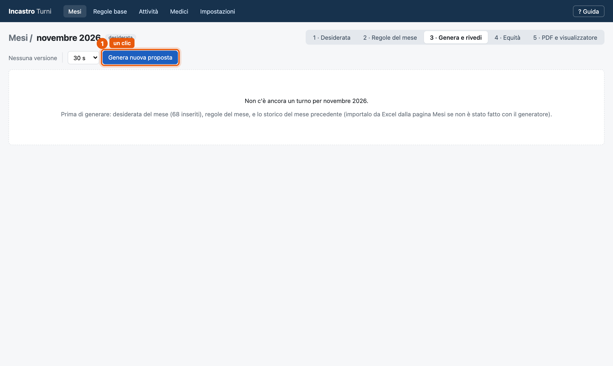
Una barra mostra l'avanzamento. Il programma prova moltissime combinazioni e tiene la migliore trovata nel tempo concesso.
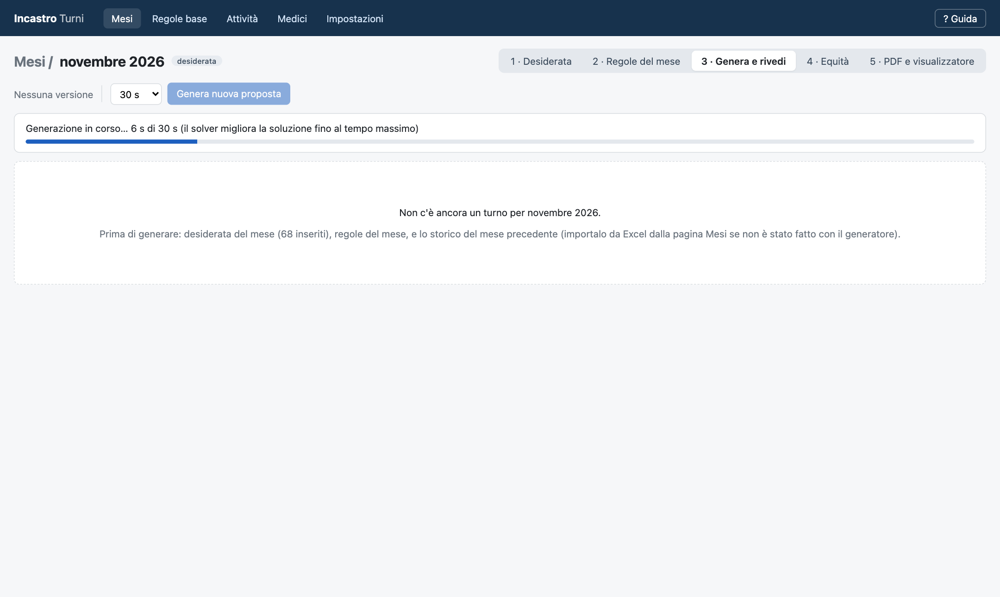
Controlla il risultato
Il turno compare nella griglia, con gli stessi colori del foglio Excel. Guarda soprattutto la riga dei riepiloghi (1):
- violazioni rigide in verde con 0: il turno rispetta tutte le regole obbligatorie;
- preferenze non soddisfatte in giallo: richieste «se possibile» che non si è riusciti ad accontentare; il motivo è nel pannello a destra (2), quasi sempre assenze (es. «nessun medico disponibile per NEU quella settimana»);
- desiderata non rispettati: quanti desiderata non è stato possibile soddisfare.
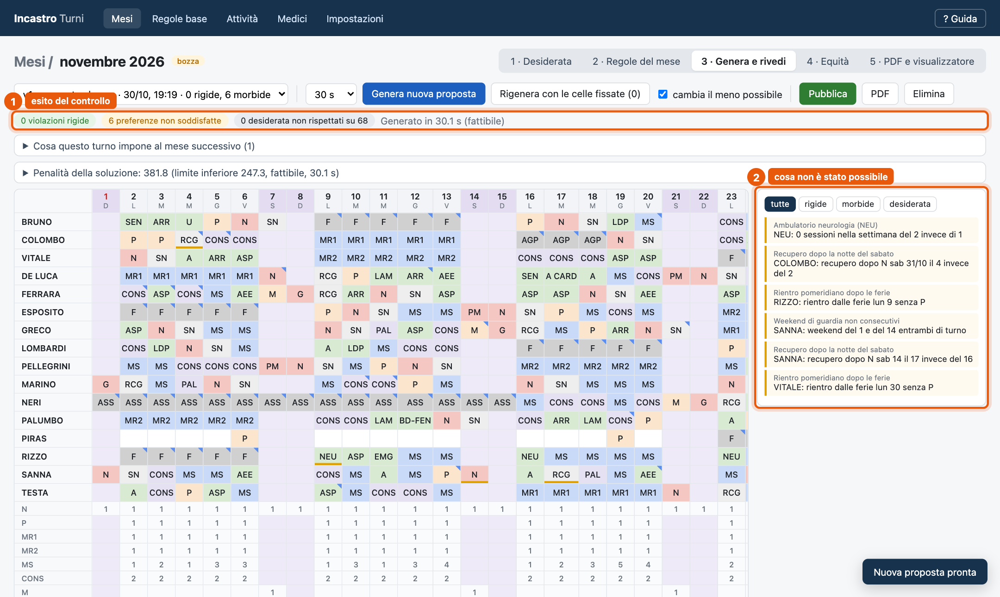
Pubblica, scarica il PDF e invia ai medici
Quando il turno è quello giusto premi Pubblica (1): diventa il turno ufficiale del mese e il riferimento per il mese successivo (smonti, recuperi, equità). Con PDF (2) ottieni il documento da far firmare e consegnare in amministrazione.
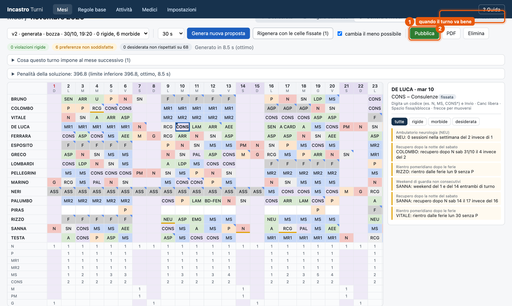
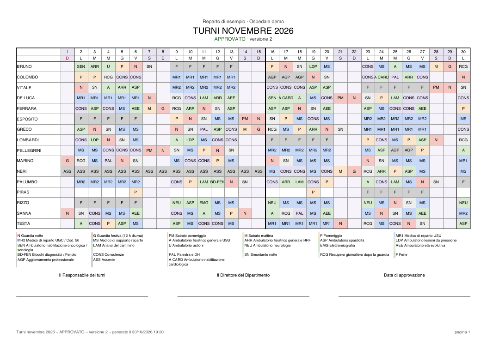
Infine, nella scheda 5 · PDF e visualizzatore, premi Esporta per il visualizzatore: l'applicazione prepara il messaggio con il link da inviare ai medici su WhatsApp o per e-mail (dettagli nella Parte 6).
Parte 2Correggere il turno e rigenerarlo
Capita spesso: il direttore chiede che un medico faccia una certa attività in un certo giorno, un collega cambia idea, si vuole spostare un turno. Il modo di lavorare è sempre lo stesso: cambi a mano solo le celle che ti interessano, le «fissi» e chiedi al programma di sistemare il resto.
Esempio: «DE LUCA il 10 deve fare consulenze»
Seleziona la cella
Clicca sulla cella (1). Nel pannello a destra (2) compaiono il dettaglio della cella, il desiderato del medico per quel giorno ed eventuali segnalazioni.
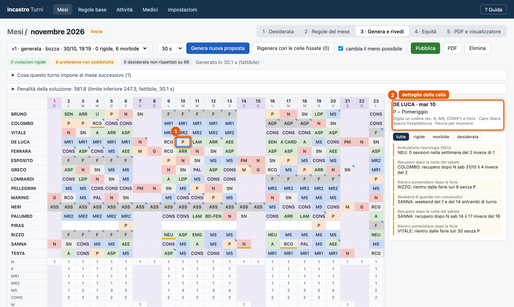
Scrivi la nuova sigla
Con la cella selezionata inizia a scrivere la sigla (es. CONS): si apre un riquadro (1) che suggerisce le sigle del catalogo. Premi Invio per confermare, Esc per annullare. In alternativa fai doppio clic sulla cella.
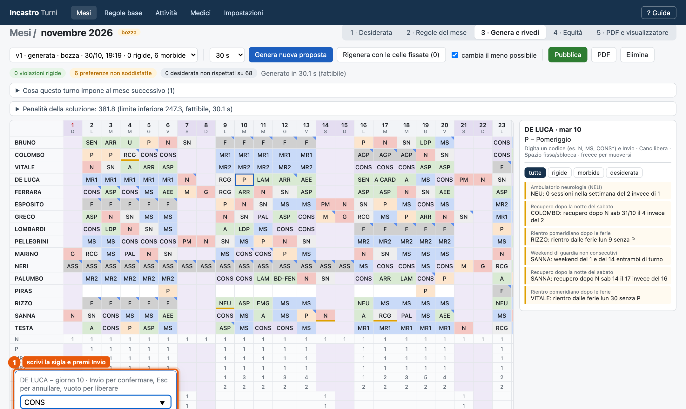
Fissa la cella e guarda il controllo
Premi la barra Spazio per fissare la cella (bordo scuro e pallino in alto a sinistra) (1). Una cella fissata non verrà più toccata dal programma. Il controllo si aggiorna subito (2): qui la modifica ha lasciato scoperto l'ambulatorio ARR del 10 e portato le consulenze a 3. Sono le due violazioni rigide segnalate in rosso nel pannello a destra.
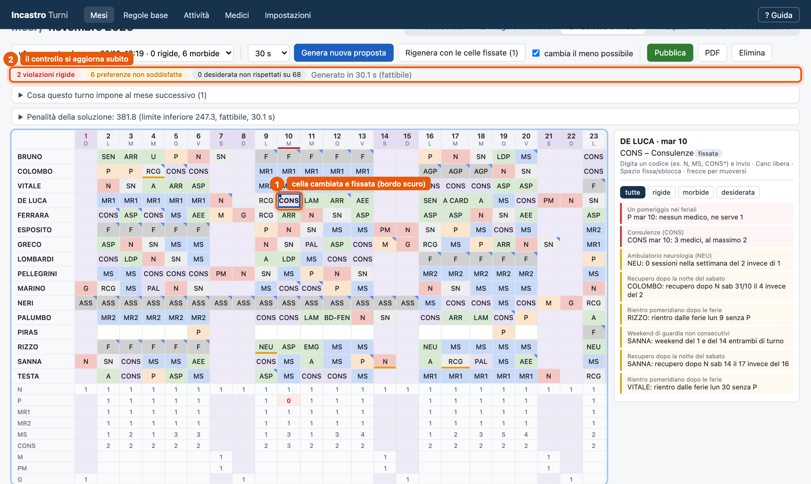
Rigenera con le celle fissate
Premi Rigenera con le celle fissate (1). Con la casella cambia il meno possibile attiva (consigliato) il programma ricalcola il turno tenendo le celle fissate e spostando il minimo indispensabile.
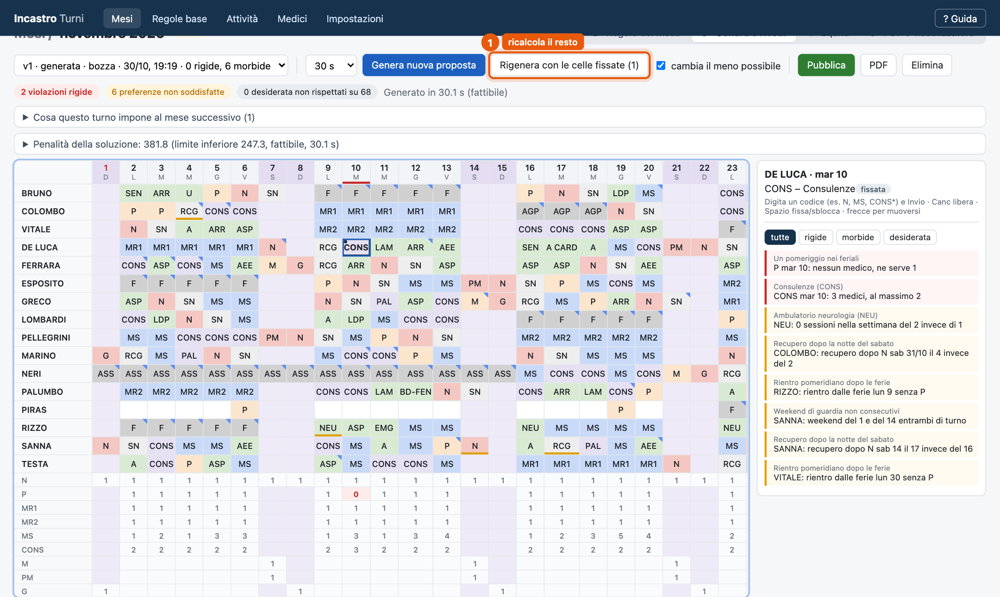
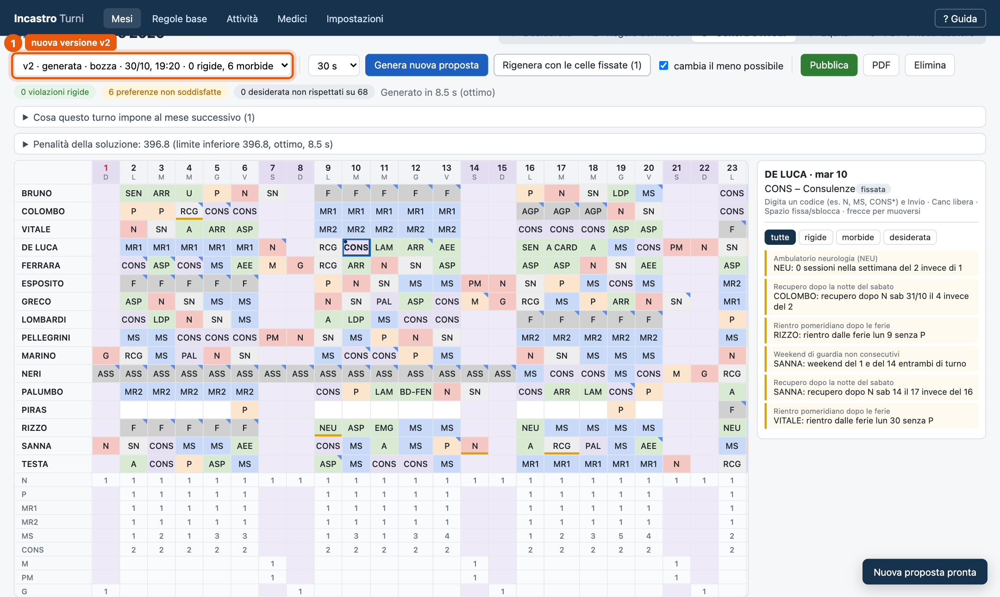
Le versioni
Ogni generazione crea una nuova versione (v1, v2, v3…) senza cancellare le precedenti. Il menu a tendina in alto a sinistra le elenca con data e numero di violazioni: puoi tornare a una versione precedente in qualsiasi momento e pubblicare quella che preferisci. Le versioni che non servono si tolgono con Elimina (la versione pubblicata non si può eliminare).
Riepilogo dei comandi della griglia
| Per… | fai così |
|---|---|
| scegliere una cella | clic sulla cella, oppure le frecce ← → ↑ ↓ |
| cambiare l'attività | scrivi la sigla e premi Invio (o doppio clic sulla cella) |
| lasciare libero il medico quel giorno | Canc oppure ⌫ |
| fissare / sbloccare una cella | Spazio |
| due attività nella stessa cella (es. AI e PAL) | scrivi AI/PAL |
| far ricalcolare il resto | Rigenera con le celle fissate |
| ricominciare da zero | Genera nuova proposta (le celle fissate non vengono considerate) |
Cambi chiesti dopo la pubblicazione
Una versione pubblicata non si modifica direttamente, per avere sempre traccia di cosa era stato approvato.
- Seleziona la versione pubblicata e premi Duplica per modificare: nasce una copia in bozza.
- Fai i cambi nella copia (celle a mano, ed eventualmente Rigenera con le celle fissate).
- Premi Pubblica sulla nuova versione: diventa quella ufficiale, la precedente viene archiviata.
- Scarica il nuovo PDF ed esporta di nuovo per il visualizzatore: i medici ricevono un link aggiornato che sostituisce il precedente.
Cambi che riguardano tutto il mese
Se la richiesta non riguarda un singolo giorno ma una regola («a novembre la robotica non si fa», «il sabato mattina servono due medici») non serve cambiare le celle una a una: si cambia la regola del mese (vedi Parte 4) e si genera una nuova proposta.
Parte 3I desiderata in dettaglio
I desiderata si scrivono come nel foglio Excel di raccolta. Questi sono i codici riconosciuti:
| Scrivi | Significato | Come lo tratta il programma |
|---|---|---|
| F, AGP (anche AG P), Mal | ferie, aggiornamento, malattia | assenza: il medico non riceve turni. Nel turno compare il codice (la malattia come «ASS», assente generico, per riservatezza) |
| NO | nessun turno quel giorno | il medico resta libero |
| NO P, NO N, NO P N (anche No P/N), NO G | niente pomeriggio / notte / 12 h | quei turni non gli vengono dati quel giorno |
| M in un giorno feriale | solo mattina | niente pomeriggio, notte o 12 h |
| N, P, G, PM, M di sabato, o un ambulatorio (es. ASP) | richiesta di quel turno | preferenza: viene data se possibile |
«NO» vincolanti
La casella «NO» vincolanti (attiva di solito) fa rispettare i «NO» come obbligo. Se in un mese è impossibile rispettarli tutti, il programma non si blocca: li tratta come preferenze fortissime, ne viola il minimo possibile e te lo segnala con un avviso in giallo. I desiderata non rispettati compaiono nel filtro desiderata del pannello a destra.
Testi non riconosciuti
Una cella arancione contiene un testo che il programma non capisce (es. «chiedere a IP»): viene ignorata nella generazione e segnalata in alto. Riscrivila con uno dei codici della tabella.
Parte 4Regole del mese e ambulatori
Le regole sono di due tipi:
- Regole base: quelle del documento del reparto, valide tutti i mesi (una notte ogni notte, smonto dopo la notte, chi fa il sabato pomeriggio fa la domenica notte, ambulatori con i loro giorni e medici, equità…). Si vedono e si cambiano nella pagina Regole base.
- Variazioni del mese: eccezioni che valgono solo per un mese. Si gestiscono nella scheda 2 · Regole del mese e non toccano gli altri mesi.
Aggiungere un ambulatorio per il mese
Esempio: da novembre parte l'ambulatorio di riabilitazione cardiologica, il martedì, due volte al mese, con COLOMBO o DE LUCA.
- In 2 · Regole del mese premi + Ambulatorio nel mese.
- Se la sigla non esiste ancora, premi + nuova accanto ad «Attività / ambulatorio» e inserisci codice, sigla e nome.
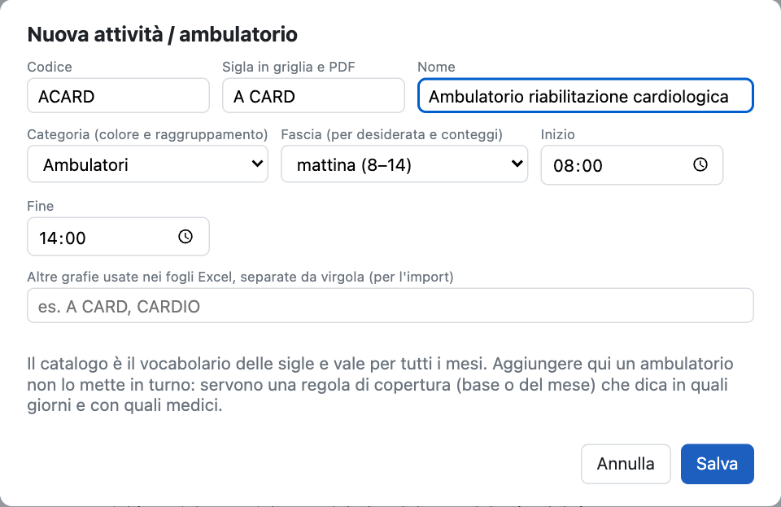
- Compila il modulo: giorni (feriali, martedì), medici per giorno (1), chi può farlo (solo questi: COLOMBO, DE LUCA), e, se l'ambulatorio non si fa ogni martedì, Non tutti i giorni indicati: un numero di sessioni (al mese, massimo 2, obiettivo 2).
- Sotto il modulo una riga verde riassume la regola in italiano: controlla che dica quello che intendi e premi Salva.
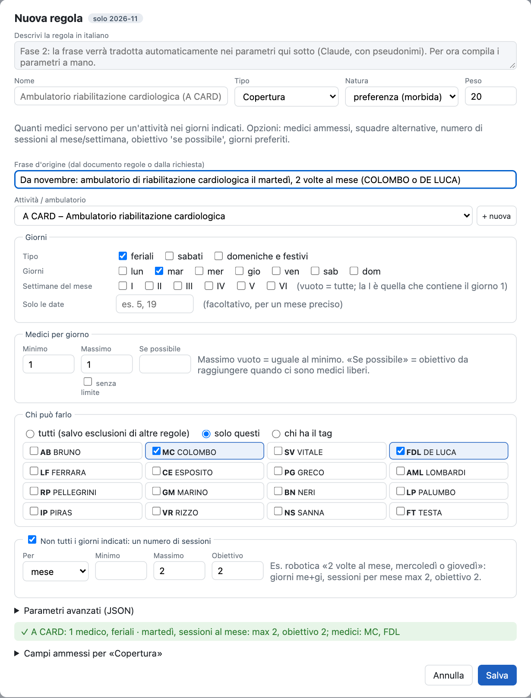
Sospendere un ambulatorio per il mese
Nel riquadro Ambulatori e attività premi Sospendi nel mese sulla riga dell'ambulatorio (es. la robotica). Il mese successivo tornerà regolarmente. Per annullare premi Riattiva.
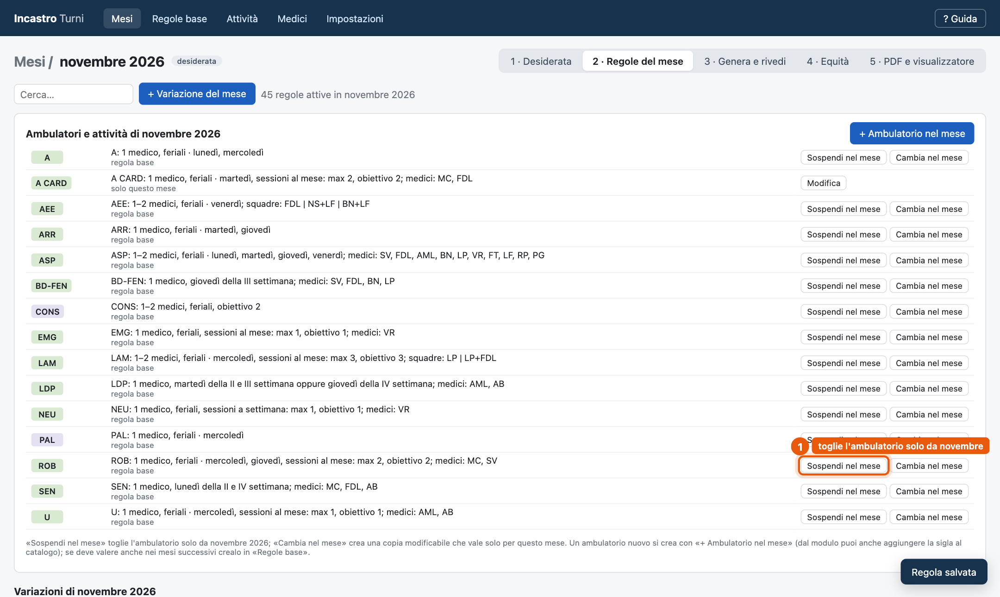
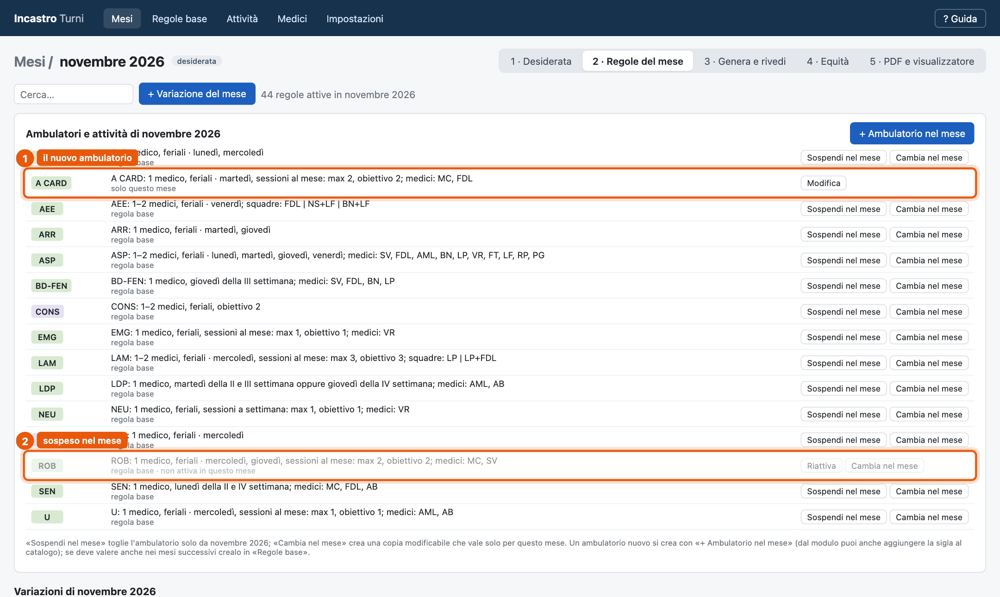
Cambiare un ambulatorio solo per il mese
Per spostare un ambulatorio su altri giorni o con altri medici solo per un mese, premi Cambia nel mese: si apre lo stesso modulo con i valori attuali. Salvando nasce una copia valida solo per il mese, che sostituisce la regola base; gli altri mesi non cambiano.
Altre variazioni del mese
Sotto il riquadro degli ambulatori ci sono le Variazioni del mese e l'elenco completo delle Regole base, ognuna con la frase del documento da cui deriva. Per ogni regola base puoi:
- Disattiva nel mese: la regola non vale per questo mese;
- Modifica solo nel mese: copia modificabile valida solo per questo mese (es. «sabato mattina due medici»).
Con + Variazione del mese si crea una regola di qualunque tipo (vedi sotto). Dopo aver cambiato le regole, genera una nuova proposta.
Regole base: le regole di sempre
La pagina Regole base contiene le regole valide ogni mese. Cambiale solo quando cambia davvero l'organizzazione del reparto (es. un ambulatorio passa stabilmente dal lunedì al martedì): la modifica vale per tutti i mesi che genererai da quel momento; i turni già fatti non cambiano.
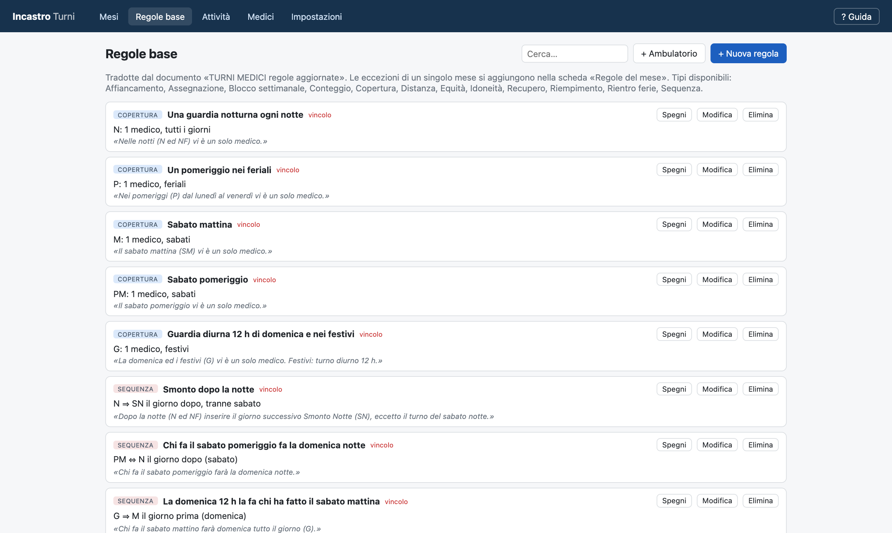
Le regole che non riguardano un ambulatorio (sequenze, recuperi, equità…) si modificano con i parametri scritti in forma tecnica (JSON). È una modifica da fare con calma, eventualmente con chi ha configurato l'applicazione: l'editor verifica i parametri mentre scrivi e non salva una regola sbagliata.
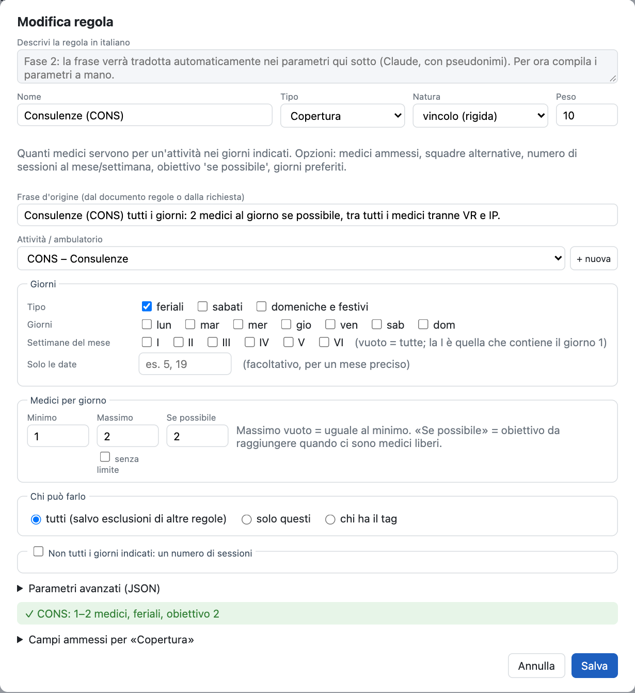
| Tipo di regola | Serve per… | Esempio |
|---|---|---|
| Copertura | quanti medici servono per un'attività e in quali giorni | un MR1 ogni feriale; ASP lun-mar-gio-ven |
| Idoneità | chi non può fare cosa | IP solo pomeriggi; BN niente notti |
| Conteggio | quante volte al mese per medico | IP 1–2 pomeriggi al mese |
| Sequenza | legami tra giorni | dopo N lo smonto; sabato PM → domenica N |
| Recupero | giorni di recupero dopo le guardie | RCG dopo la domenica 12 h |
| Blocco settimanale | stesso medico per tutta la settimana | MR1 e MR2 |
| Affiancamento | i nuovi solo con un senior | ASP a ottobre |
| Riempimento | nessun medico senza attività nei feriali | chi resta libero fa MS |
| Distanza | non troppo ravvicinati | notti a 4 giorni, weekend non consecutivi |
| Rientro ferie | attività al rientro | rientro pomeridiano |
| Equità | ripartire turni pesanti in modo equo | notti, festivi, sabati, pomeriggi |
| Assegnazione | un'attività fissa in un giorno | «FDL fa LAM il 7» |
Parte 5Leggere il risultato
La pagina «Genera e rivedi»
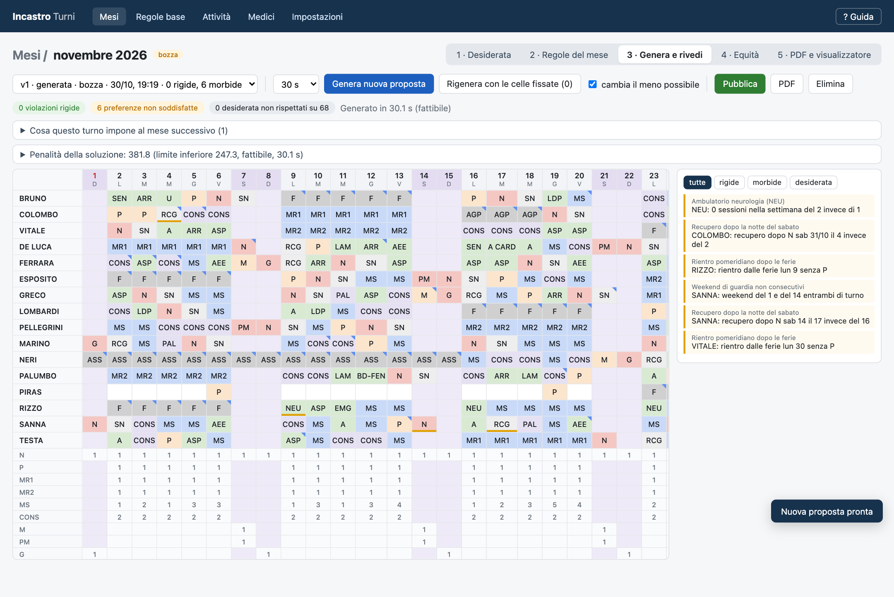
| Zona | Cosa contiene |
|---|---|
| Barra in alto | scelta della versione, tempo di calcolo, Genera nuova proposta, Rigenera con le celle fissate, cambia il meno possibile, Duplica per modificare (per le versioni pubblicate), Pubblica, PDF, Elimina |
| Riga dei riepiloghi | violazioni rigide, preferenze non soddisfatte, desiderata non rispettati, tempo di calcolo |
| «Cosa questo turno impone al mese successivo» | es. «SN il giorno 1» per chi fa la notte dell'ultimo giorno, la domenica dopo un sabato a fine mese, i recuperi da dare all'inizio del mese dopo. Il mese successivo ne terrà conto da solo |
| «Penalità della soluzione» | dettaglio tecnico di quanto «costa» ogni compromesso: serve solo per capire perché una preferenza non è stata soddisfatta |
| Griglia | medici × giorni; weekend e festivi in viola; a destra i conteggi del mese per medico (N notti, P pomeriggi, SAB sabati, FEST domeniche e festivi, MR giorni di reparto, CONS consulenze, AMB ambulatori) |
| Righe in fondo alla griglia | quanti medici fanno N, P, MR1, MR2, MS, CONS, M, PM, G ogni giorno; in rosso dove ne manca uno |
| Pannello a destra | dettaglio della cella selezionata ed elenco delle segnalazioni, filtrabile: rigide (da correggere), morbide (preferenze non soddisfatte), desiderata. Clic su una segnalazione = vai alla cella |
| Nella griglia vedi… | significa |
|---|---|
| bordo rosso sulla cella | la cella viola una regola obbligatoria |
| linea gialla in basso nella cella | una preferenza non soddisfatta in quella cella |
| triangolino blu / rosso nell'angolo | c'è un desiderato, rispettato / non rispettato |
| bordo scuro e pallino | cella fissata |
| cella a righe grigie | medico non in servizio quel giorno (prima dell'arrivo o dopo la partenza) |
Violazioni rigide e preferenze
Le violazioni rigide sono regole obbligatorie non rispettate: un turno generato non ne ha mai. Compaiono solo dopo modifiche a mano, finché non rigeneri. Le preferenze non soddisfatte sono normali: indicano cose «se possibile» che quel mese non lo erano (es. un ambulatorio il cui medico è in ferie).
Equità
La scheda 4 · Equità mostra per notti, festivi, sabati, pomeriggi, reparto, consulenze e ambulatori quanti turni ha ciascun medico (Fatti) e quanti ne spetterebbero (Obiettivo). L'obiettivo tiene conto dei giorni di presenza nel mese e di quanto il medico ha fatto nei mesi precedenti (Saldo storico: positivo = ne ha fatti di più). Le colonne a destra riportano i mesi passati.
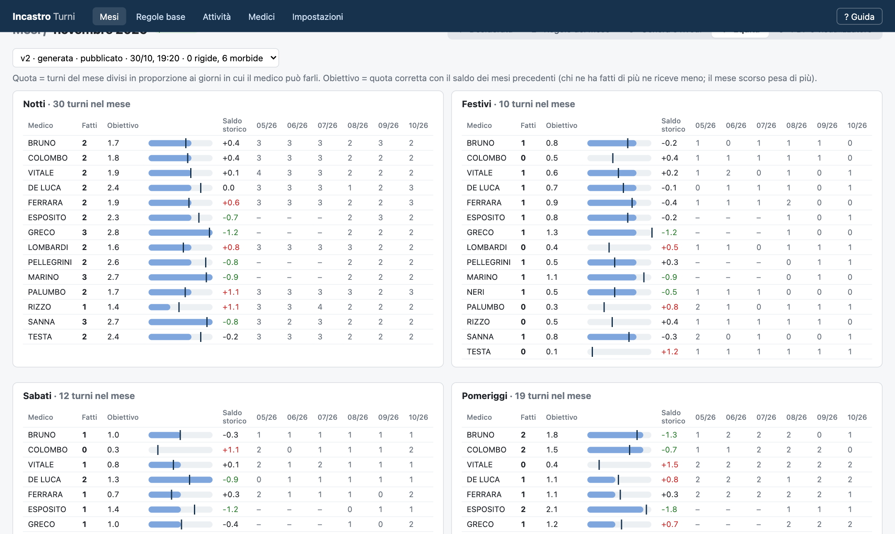
Se il turno è impossibile
Se le regole e le assenze non lasciano alcuna soluzione (es. troppi medici in ferie lo stesso giorno), al posto del turno compare un riquadro rosso con i vincoli in conflitto.
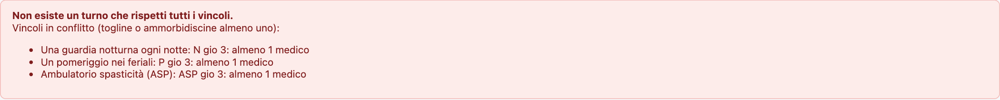
Cosa fare, in ordine:
- controlla i desiderata di quel giorno (un errore di battitura? ferie sovrapposte da rivedere con i colleghi?);
- se un ambulatorio non si può fare, sospendilo per quel giorno o rendilo «preferenza»;
- se il caso è eccezionale, cambia la regola solo per il mese (es. una copertura con meno medici) e genera di nuovo.
Parte 6PDF e invio ai medici
La scheda 5 · PDF e visualizzatore riunisce le due uscite del turno.
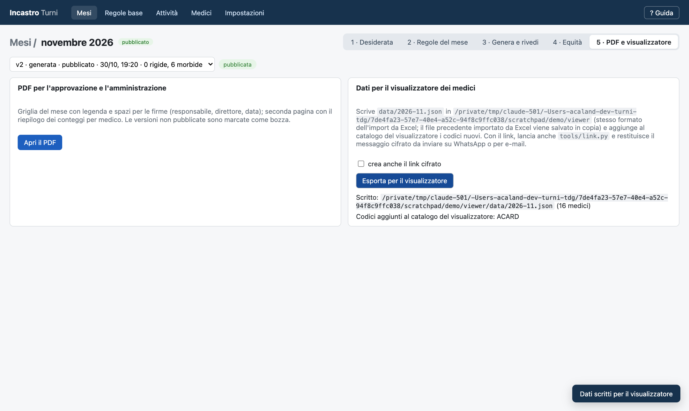
- PDF: griglia, legenda, firme (responsabile, direttore, data) e riepilogo dei conteggi. Si stampa o si invia in amministrazione.
- Esporta per il visualizzatore: prepara i turni per l'app che i medici usano sul telefono. Con crea anche il link cifrato compare il messaggio pronto da incollare nel gruppo WhatsApp o in una e-mail, con il pulsante Copia il messaggio.
Parte 7Medici e attività
Medici
La pagina Medici elenca i medici del reparto con sigla, cognome, tag, periodo di servizio, mesi di storico e numero di regole che li citano. L'ordine (frecce ↑↓) è quello delle griglie e del PDF.
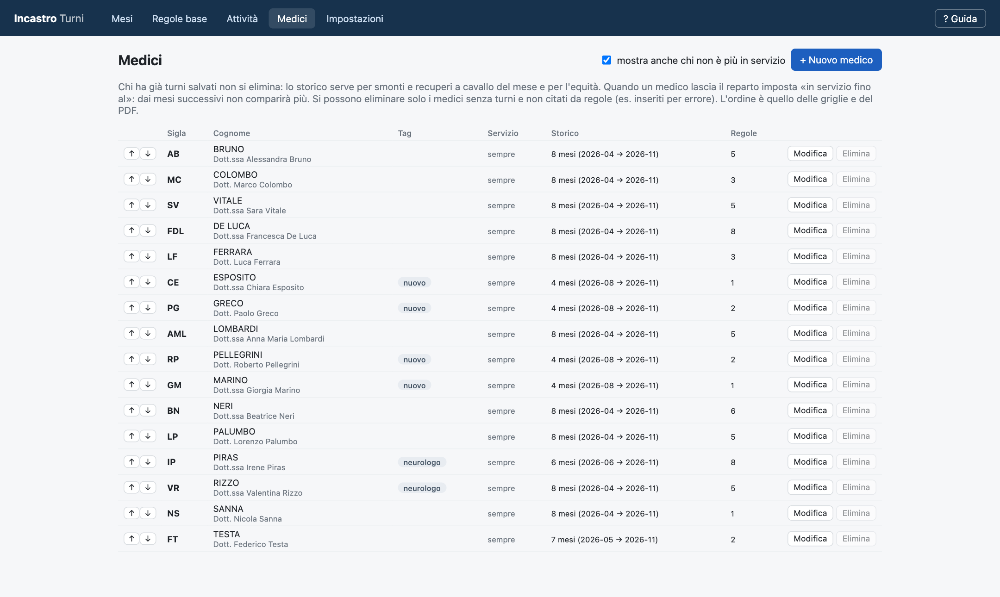
- Nuovo medico: + Nuovo medico, con sigla (quella usata nelle regole), cognome e data di inizio servizio.
- Medico che lascia il reparto: Modifica → «In servizio fino al». Da quel giorno non riceve turni e dai mesi successivi non compare più, ma resta nei turni passati.
- Eliminare si può solo per un medico inserito per errore (senza turni salvati e non citato da regole). Chi ha lavorato non si elimina, perché il suo storico serve per i recuperi a cavallo del mese e per l'equità.
- Tag: etichette usate dalle regole (es. nuovo per gli affiancamenti, neurologo).
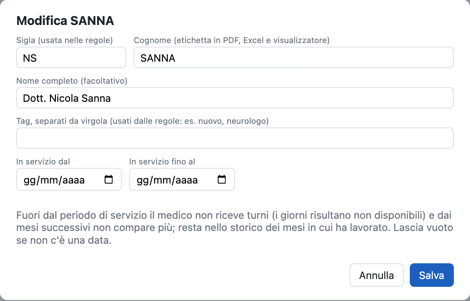
Attività e ambulatori
La pagina Attività è il vocabolario delle sigle, valido per tutti i mesi: guardie, reparto, ambulatori, altre attività, riposi e assenze, ciascuno con colore e orario. Aggiungere una sigla qui non la mette in turno: per quello serve una regola di copertura (Parte 4).
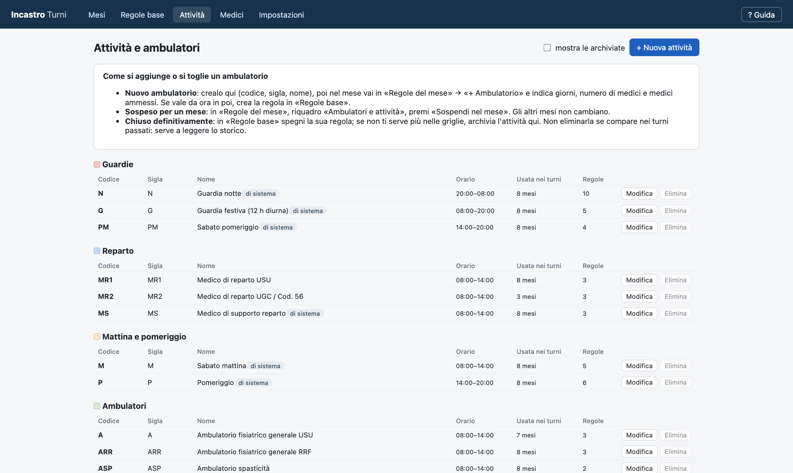
| Se vuoi… | fai così |
|---|---|
| un ambulatorio nuovo da un certo mese | Regole del mese → + Ambulatorio nel mese → + nuova (se vale anche dopo: Regole base → + Ambulatorio) |
| toglierlo per un mese | Regole del mese → Sospendi nel mese |
| chiuderlo per sempre | Regole base → Spegni sulla sua regola; poi, se vuoi, Attività → Modifica → archiviata |
| cambiarne nome o sigla | Attività → Modifica (il codice resta lo stesso, quindi i turni passati restano leggibili) |
Una sigla già usata nei turni non si elimina, si archivia: non viene più proposta, ma i turni passati restano leggibili.
Parte 8Le pagine dell'applicazione in breve
| Pagina | Cosa c'è | Quando si usa |
|---|---|---|
| Mesi | elenco dei mesi con stato; apertura di un mese; Importa storico da Excel per caricare i vecchi turni fatti a mano | ogni mese |
| Mese → 1 · Desiderata | griglia dei desiderata; import dal foglio Excel; casella «NO» vincolanti; legenda | ogni mese |
| Mese → 2 · Regole del mese | ambulatori del mese (sospendi, cambia, aggiungi); variazioni; regole base attive nel mese | quando cambia qualcosa |
| Mese → 3 · Genera e rivedi | generazione, griglia modificabile, controlli, versioni, pubblicazione, PDF | ogni mese |
| Mese → 4 · Equità | turni per medico contro l'obiettivo, con lo storico dei mesi precedenti | per controllo o in caso di contestazioni |
| Mese → 5 · PDF e visualizzatore | PDF per l'amministrazione; esportazione e link per i telefoni dei medici | ogni mese, dopo la pubblicazione |
| Regole base | regole valide per tutti i mesi, con l'editor | raramente |
| Attività | catalogo delle sigle e degli ambulatori | quando nasce o chiude un ambulatorio |
| Medici | anagrafica, periodo di servizio, ordine | quando arriva o lascia un medico |
Sigle principali
- N guardia notte (20–8)
- SN smontante notte
- G guardia festiva 12 h (8–20)
- RCG recupero dopo la guardia
- M sabato mattina
- PM sabato pomeriggio
- P pomeriggio feriale
- MR1 medico di reparto USU
- MR2 medico di reparto UGC
- MS medico di supporto
- CONS consulenze
- CONS* aggiornamento cartelle DH
- PAL palestra e DH
- A, ARR ambulatori generali
- ASP spasticità
- F ferie · AGP aggiornamento · ASS assente
L'elenco completo, con nomi e orari, è nella pagina Attività.
Parte 9Domande frequenti
Devo reinserire le regole ogni mese?
No. Le regole base valgono sempre; ogni mese aggiungi solo le eccezioni, se ci sono.
Il programma sa chi ha fatto la notte l'ultimo giorno del mese scorso?
Sì, se il mese precedente è stato pubblicato nell'applicazione (o importato dal vecchio foglio Excel): smonti, recuperi e weekend a cavallo dei due mesi vengono rispettati da soli.
Due proposte generate di fila sono diverse?
Possono esserlo, perché il programma cerca fra moltissime soluzioni equivalenti. Rispettano entrambe le regole: scegli quella che preferisci. Per cambiare poco rispetto a una versione esistente usa Rigenera con le celle fissate con «cambia il meno possibile».
Ho fatto una modifica sbagliata: posso tornare indietro?
Sì: ogni generazione è una versione separata. Riseleziona dal menu la versione precedente, oppure correggi la cella a mano.
Quanto tempo di calcolo scegliere?
30 secondi bastano quasi sempre. Se in alto leggi «fattibile» invece di «ottimo» e vuoi provare a migliorare l'equità, rigenera con 1 o 2 minuti.
Posso far fare due attività a un medico nello stesso giorno?
Sì, a mano: scrivi le due sigle separate da una barra (es. AI/PAL). Il programma di suo ne assegna una sola.
I dati dove sono?
Sul computer dove gira l'applicazione. Ai medici arriva solo il link cifrato, che senza il codice del reparto non si può leggere.
Incastro Turni · guida per il responsabile dei turni · ottobre 2026